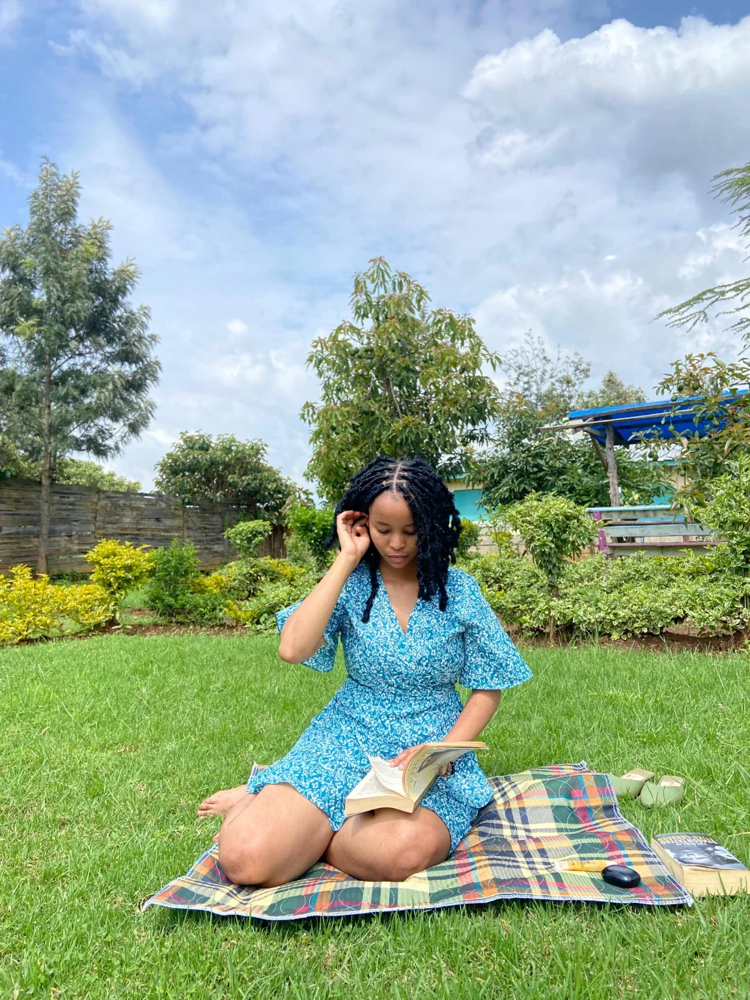

STAY A LITTLE LONGER
Less hurry.
More time for you.
Make a stay part of your visit. Ask about current rooms, photographs and overnight arrangements.
Explore accommodationRELAX · REFRESH · RECONNECT
Garden days, good food and time together.
Find your own pace at Joy Ripples Resort.
 Room to pause. Space to reconnect.
Room to pause. Space to reconnect.WELCOME TO JOY RIPPLES
A shared meal. A night away. A day that brings your people closer. Joy Ripples brings dining, stays, camping and gatherings together in the Karandi and Ngarua area of Laikipia.
Come for an afternoon, plan your celebration or make time for a little longer.
Get to know the resortYOUR TIME, YOUR WAY

OUTDOORS, TOGETHER
Plan a night outdoors, with space for your people and time away from the everyday.
Explore camping
SOMETHING TO SHARE
Browse food and drink ideas, choose your portions and prepare a dining enquiry.
Discover dining
MOMENTS THAT MATTER
Celebrate with family, gather with friends or discuss a venue for your next occasion.
Plan a gatheringSTAY A LITTLE LONGER
Make a stay part of your visit. Ask about current rooms, photographs and overnight arrangements.
Explore accommodation
RECONNECT AS A TEAM
Bring your group outdoors. Discuss your goals, meals and plans for a team building visit.
Discover team buildingOUTSIDE CATERING
From the first guest count to the final menu, start a conversation about food for your own venue. Explore sample packages and request a tailored quote.
Explore outside catering

A GLIMPSE OF THE PLACE


A LITTLE PLANNING GOES A LONG WAY
Karandi, Ngarua area, Laikipia, Kenya, near the Laikipia–Baringo border. Contact the team for the exact entrance pin and arrival guidance.
Food and drinks are offered at Joy Ripples. Ask the team about your preferred date, meal time and any arrangements for your visit.
Share your dates, guest count and requirements. The team will confirm equipment, facilities, activity arrangements and the quotation directly.
The website helps you prepare an enquiry. Your visit is confirmed directly with the resort after availability, price and terms are agreed.
A LITTLE ESCAPE IS CLOSER THAN YOU THINK